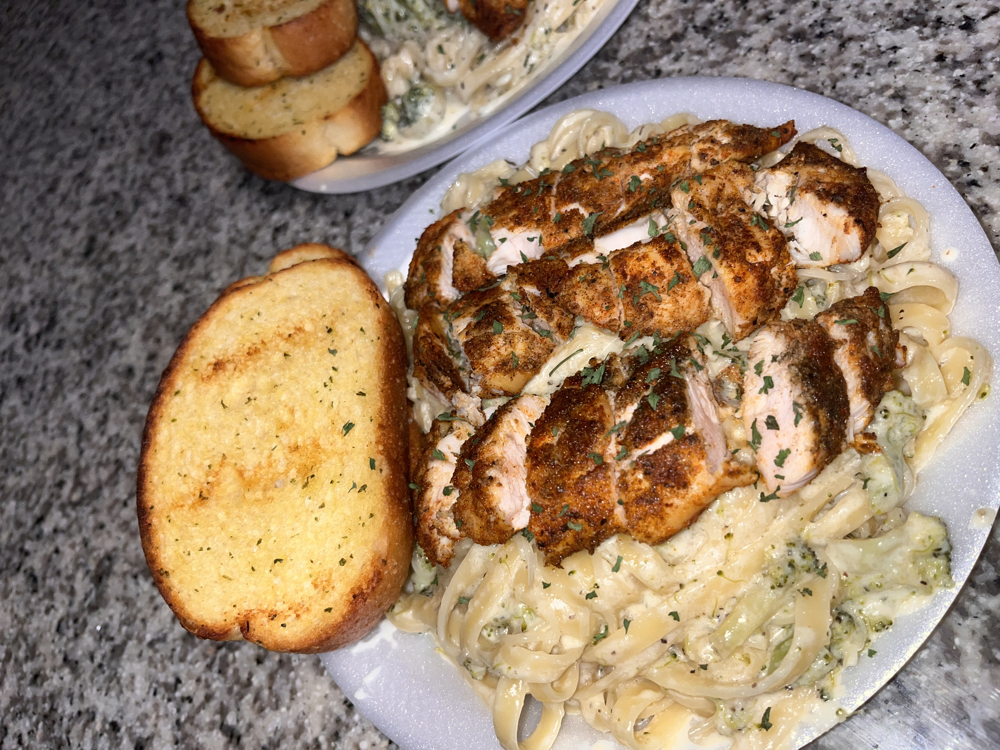

Food and Recipes
Here are some of my favorite food items and I'll later include the recipe to create them
-
5 Cheese Macaroni

-
Chicken and Broccoli Alfredo
 -
Spaghetti

I have also included some of the different foods that I have created. ☺